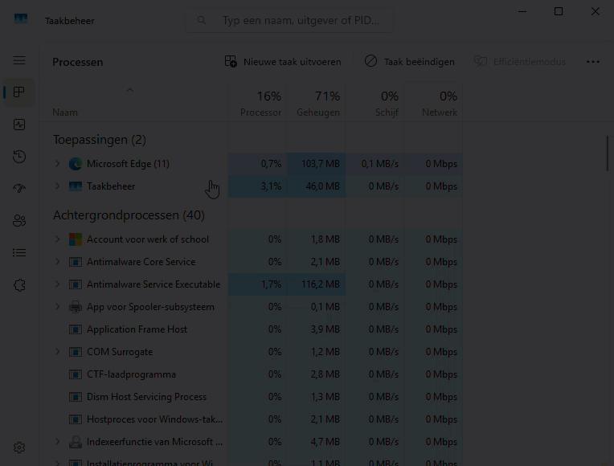
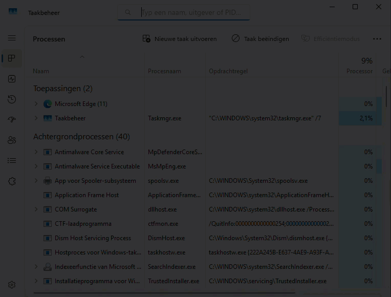
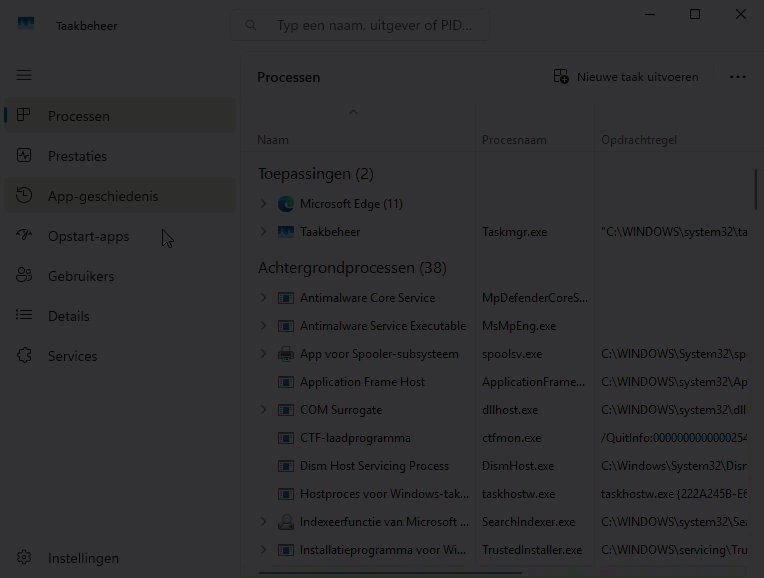
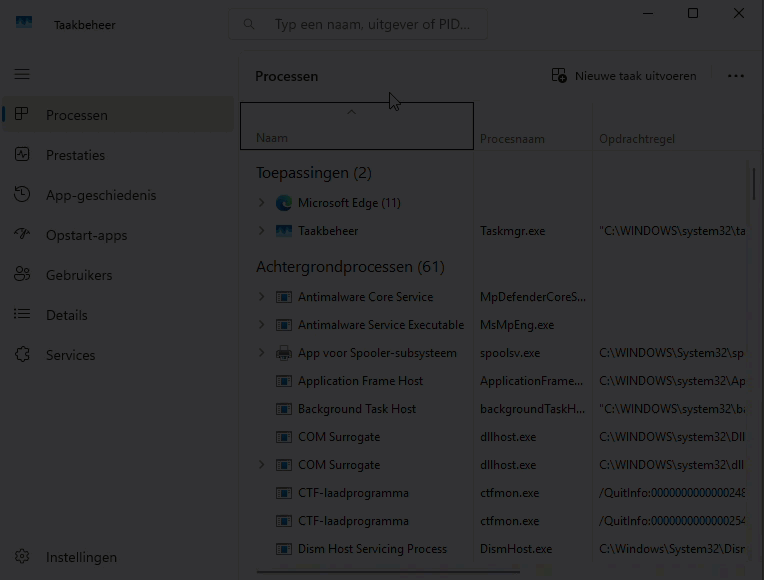
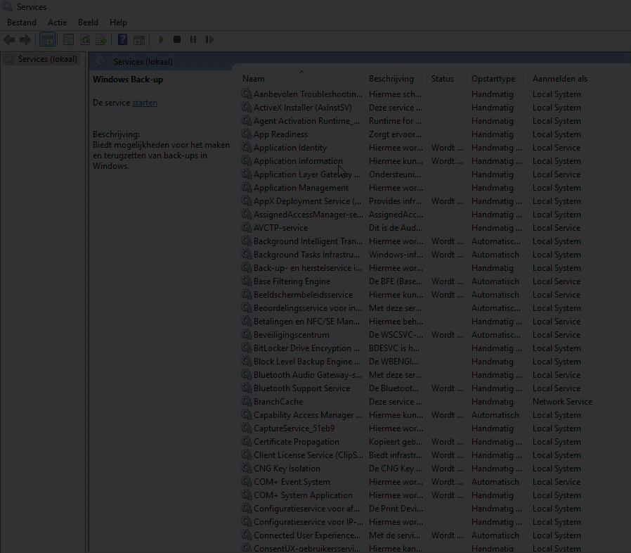
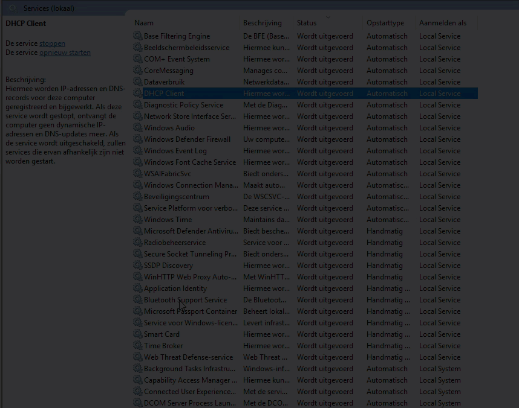

1. Task Manager
In Task Manager kan je:
- Het gebruik van systeemresources monitoren (CPU, geheugen, schijf en netwerk).
- Actieve processen en hun details bekijken.
- Een proces beëindigen als het niet meer reageert of overbodig is.
- Actieve services en hun status controleren.
- Rechtstreeks vanuit Task Manager een nieuw proces uitvoeren.
- De bestandslocatie van een proces bekijken.
- Je kan Task Manager openen met de sneltoets CTRL+SHIFT+ESC.
- Typ in Windows Search: "Task Manager".
1.1. De locatie van een proces of programma bekijken
- Klik met de rechtermuisknop op de kolomhoofdingen in Windows Task Manager.
- Selecteer: Process Name en Command Line.
Zo zie je het exacte uitvoerbare bestand van elk proces en de locatie ervan op de schijf.

1.2. Een proces/programma beëindigen
- Typ de naam van het programma of proces dat je wil beëindigen in het zoekveld.
- Klik met de rechtermuisknop op het gewenste programma.
- Selecteer End task.
Het programma en de bijbehorende processen worden dan beëindigd.

1.3. Opstart-apps beheren
Via Windows Task Manager kan je beheren welke applicaties starten wanneer een gebruiker aanmeldt.
- Open Task Manager.
- Klik in het linkermenu op het snelheidsmeter-icoon (Startup apps).
- Klik met de rechtermuisknop op de applicatie die je wil en selecteer Enable.
De volgende keer dat je aanmeldt, start de applicatie die je hebt ingeschakeld automatisch. Op dezelfde manier kan je opstart-apps uitschakelen als je niet meer wil dat ze starten.

1.4. Users
Wanneer meerdere gebruikers aangemeld zijn op een lokaal systeem, kan je dat bekijken via Windows Task Manager. Je ziet welke processen elke gebruiker uitvoert en je kan ze indien nodig ook afmelden.
- Klik in Windows Task Manager in het linkermenu op het Users-icoon.
- Klik op de pijl naast een andere gebruiker om de processen weer te geven die deze uitvoert.
- Klik met de rechtermuisknop op de gebruiker en selecteer Sign out. De gebruiker wordt dan afgemeld.
- Klik op de knop Sign out user.
Opmerking: het kan enkele seconden duren voordat de gebruiker volledig is afgemeld.

2. Services
Je kan de services op je systeem beheren met de Microsoft Management Console via de Services-snap-in. Je kan ze als volgt openen:
- Typ in Windows Search: "Services" en druk op Enter.
2.1. Services bekijken
Je kan Windows-services eenvoudig bekijken via de kolomhoofdingen bovenaan. Door op deze hoofdingen te klikken, kan je de services sorteren op:
- Name
- Description
- Status
- Startup type
- De gebruiker die de service uitvoert (Log On As)

2.2. Service-eigenschappen bewerken
Je kan het gedrag of de eigenschappen van een service wijzigen door erop te dubbelklikken en een van de volgende instellingen aan te passen:
- Startup type
- Status
